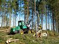

forestry

Definition: Forestry is the science and craft of creating, managing, planting, using, conserving and repairing forests and woodlands for associated resources for human and environmental benefits. Forestry is practiced in plantations and natural stands. The science of forestry has elements that belong to the biological, physical, social, political and managerial sciences. Forest management play essential role of creation and modification of habitats and affect ecosystem services provisioning.Modern forestry generally embraces a broad range of concerns, in what is known as multiple-use management, including: the provision of timber, fuel wood, wildlife habitat, natural water quality management, recreation, landscape and community protection, employment, aesthetically appealing landscapes, biodiversity management, watershed management, erosion control, and preserving forests as "sinks" for atmospheric carbon dioxide.
Source: Wikipedia
Wikipedia Page (Something wrong with this association? Let us know.)
Wikidata Page (Something wrong with this association? Let us know.)